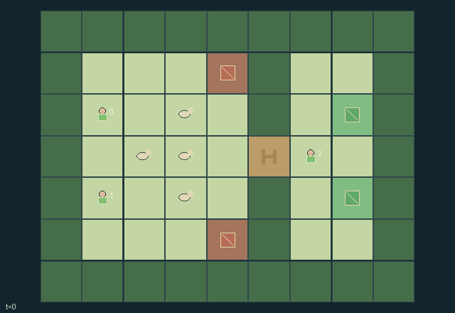

GI096 · Flank-and-Hold Meadow

Original recording scope: 原回放视角 · Mode: 固定脚本演示
Additional generated state replay (different trajectory / full-state debug)

Cooperate to guide four physical animals through the gate to either safe pen while limiting panic and ditch losses.
Identity and original contract
3 independently actionable roles; 8 discrete commands per role; 133 native observation columns per role; original horizon 64 steps. Declared per-step reward range: -4 to 4. Observation regime: fully_observable.
Source SHA-256: dc0778d0198f820eb1619db6f0f6b666b6bca60afb7655ac7f1ba5ed4e83634f
The objective, rewards, population, map and horizon remain original. A preview is not a success claim.
Objective and gameplay
Cooperate to guide four physical animals through the gate to either safe pen while limiting panic and ditch losses.
Animal force sums the proximity pressures of all shepherds. Multiple strong pressures raise panic; calm reduces it and an active gate holder is quiet. Cohesion acts without external pressure. High panic creates an extra microstep and permits dangerous ditch entry. Shepherds and herd physically block one another, and a gate helper spends actions on passability.
- Guide all four animals to either marked pen. Each saved animal gives every shepherd +1; each lost animal gives -1.
- Ordinary shepherd proximity repels within distance 2. A whistle costs one focus and doubles pressure within distance 3.
- Calm restores one focus, emits no pressure, and reduces nearby panic. An adjacent gate-hold action is also quiet.
- Strong combined pressure raises panic. Panic at least 3 grants a second microstep and allows dangerous ditch entry.
- Animals without pressure follow nearby herd mates; calm animals beyond the gate follow a marked pen.
- Holding the gate sets its timer to 3. The timer decays, but occupied gates remain open for safe clearance.
- Movements, collisions, panic and gate passability are real state. These author scripts have not been run.
Ending: All four animals are saved or lost. Horizon 64 otherwise, with natural completion taking priority on the same step.
Action timing: Every integer command in [0,U) is legal for every role before joint termination. Geometrically blocked or unavailable operations are deterministic failed attempts. Out-of-range commands become action 0. In absorbing states only action 0 is legal; raw_step ignores all supplied actions and preserves terminal state.
What this game explores
Resource commons & externalities: An action changes a persistent resource or burden that another role also encounters. Compare extraction with maintenance and record the downstream resource trajectory.
Joint transport & shared access: Positions, load geometry, occupancy and persistent access constrain whose action can succeed next. Distinguish physical handoff, shared controls and simultaneous force from a cosmetic cooperation label.
Survival, protection & rescue: Protection and repair alter another role's future feasible actions. Record losses, exposure, rescue and infrastructure as well as delivery; survival is determined by the actual kernel.
These are questions supported by rule structure, not observed learning effects.
Play it: operating walkthrough
crucibles play --game gi096Keep Python running and open its printed address. Select this game, set a seed and press Create session. The game itself is always English.
Assign a role range to Host with Assign / take over, or Assign all roles. Invite a second participant with Create player invitation, then assign a disjoint subset. Every original role is available.
For every owned role choose a legal command and press Queue. Arrow keys / WASD queue a declared directional action for the current role camera when available. Space or Advance one joint step advances everyone together. Non-directional games use the selectors.
Unqueued roles use the labelled untrained uniform-legal policy. Take over or release roles before the next step without resetting. Full-state debug is privileged and permanently logged; role cameras preserve permissions. Close the session to retain logs. Server restart does not restore sessions.
Complete command reference
IDs and English labels exactly match the manifest. Availability depends on role, resources, location and phase. An available action can still have no productive effect.
0·Wait with ordinary proximity pressure
1·Move north
2·Move east
3·Move south
4·Move west
5·Whistle using one focus
6·Calm nearby animals and recover focus
7·Hold gate open when adjacent
Roles and capability identifiers
These original role names describe capabilities, not interchangeable skins. Check each owned role's legal selector before planning handoffs.
agent_0·North flank starter; symmetric shepherd actions
agent_1·South flank starter; symmetric shepherd actions
agent_2·Gate-side starter; symmetric shepherd actions
Information and observation permissions
Complete public meadow state plus own-role one-hot, with exact panic, focus, gate timer and all active entity positions. All active entities and the fixed map are visible to every role; resolved animals' public status and final positions remain in the flat observation.
The GIF is full-state debug and may reveal hidden entities or private state. Train on obs[agent], not the picture, state tree or another role's private row. Field slices and visibility are in the original manifest.
Reinforcement-learning integration
import jax
from crucibles_jaxmarl import make
env = make("gi096")
key = jax.random.PRNGKey(0)
key, rk, ak, sk = jax.random.split(key, 4)
obs, state = jax.jit(env.reset)(rk)
actions = env.sample_actions(ak, state)
obs, state, rewards, dones, info = jax.jit(env.step_env)(sk, state, actions)
done = dones["__all__"]Observations are float32 vectors of width 133; actions are scalar int32; masks have 8 entries. Supply all 3 roles each transition. Masked sampling is an engineering reference, not a trained learner.
step_env retains terminal data without reset. step performs outer autoreset and keeps terminal data in info["raw_state"] and info["raw_observation"]. Use dones["__all__"] for episode boundaries; separate completion, failure and time limit in analysis.
JIT or vmap equal identities and shapes. Split independent reset, policy and transition keys. Group different shapes explicitly; do not shrink the population or horizon. Host rendering stays outside training.
Training questions and fair evaluation
Define valid completion from the objective before fitting. Preserve original rewards and also report real deliveries/services, losses, resource state, unresolved episodes and per-role returns. Animation is not a reward signal.
An action changes a persistent resource or burden that another role also encounters. Compare extraction with maintenance and record the downstream resource trajectory.
Positions, load geometry, occupancy and persistent access constrain whose action can succeed next. Distinguish physical handoff, shared controls and simultaneous force from a cosmetic cooperation label.
Protection and repair alter another role's future feasible actions. Record losses, exposure, rescue and infrastructure as well as delivery; survival is determined by the actual kernel.
Compare memory, communication or centralized critics under matched actor information. Declare critic access; keep actor inputs role-filtered. Match partner/opponent distributions, masks, compute and checkpoint selection. Final tests never enter fitting or selection.
Independent training runs or source-pairing blocks are inferential units; episodes from one policy are not independent training replications. Save hashes, keys, versions, device, time and cost. Negative, zero, failed and indeterminate outcomes are valid. No trained checkpoint or target score is supplied.
Classification and evidence
Overlapping editorial labels are reading aids, not proof of novelty, difficulty, strategic equivalence or learning effects.
- Resource commons & externalities
- Evidence
manifest.task.observation_access: Complete public meadow state plus own-role one-hot, with exact panic, focus, gate timer and all active entity positions. All active entities and the fixed map are visible to every role; resolved animals' public status and final positions remain in the flat observation.
- Joint transport & shared access
- Evidence
manifest.task.objective: Cooperate to guide four physical animals through the gate to either safe pen while limiting panic and ditch losses.
- Evidence
manifest.task.interaction: Animal force sums the proximity pressures of all shepherds. Multiple strong pressures raise panic; calm reduces it and an active gate holder is quiet. Cohesion acts without external pressure. High panic creates an extra microstep and permits dangerous ditch entry. Shepherds and herd physically block one another, and a gate helper spends actions on passability.
- Evidence
manifest.task.observation_access: Complete public meadow state plus own-role one-hot, with exact panic, focus, gate timer and all active entity positions. All active entities and the fixed map are visible to every role; resolved animals' public status and final positions remain in the flat observation.
- Survival, protection & rescue
- Evidence
manifest.task.objective: Cooperate to guide four physical animals through the gate to either safe pen while limiting panic and ditch losses.
Source, receipts and preview limits
The additional generated state GIF replays saved untrained legal actions through the original kernel. At most 25 actual endpoints include initial and terminal state; no invented interpolation. It is full-state debug, not the role observation. Where an original scene preview exists, it is displayed first with its own recorded information scope. The two recordings may use different trajectories and views.
Original source, observation slices, manifest and mechanism
Native receipt · Presentation receipt
Engineering passes do not establish learning. Nonzero floating differences remain recorded and undetermined; no new tolerance was introduced. Human scores remain unverified.